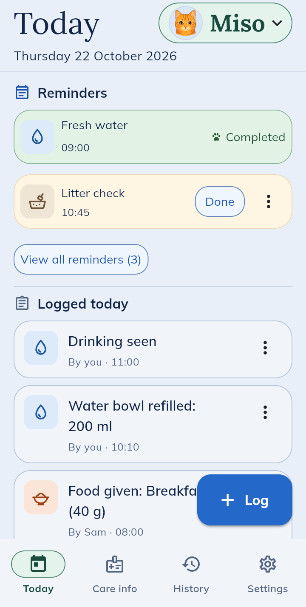
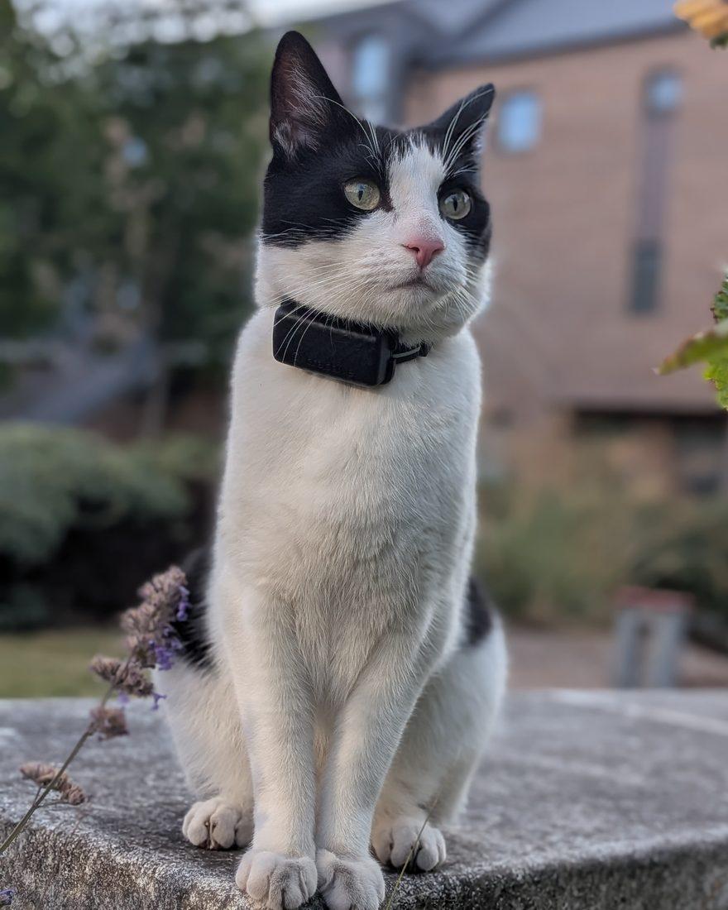
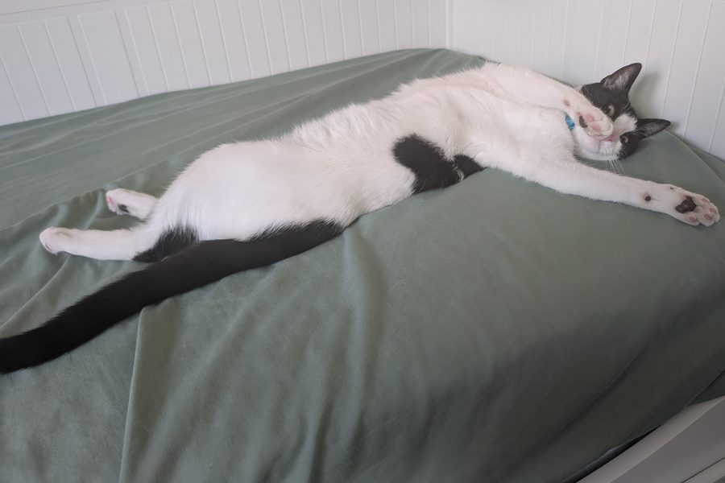

Keep track of your cat’s care, together
Record meals, medicine and vet visits, and see what everyone caring for your cat has done.
- Everyone sees the same record
- Sitter access that ends by itself
- Emergency vet numbers one tap away
Early access requests are open Android and iPhone/iPad invitations are available. I’ll email your joining details and reply to your request within a day.
A short Google Form, no sign-in needed. For ages 16+ with Android, iPhone or iPad, in the UK, US, Canada or Australia. Prefer email? Write to me instead.


How OurCat started
Hi, I make OurCat. The black-and-white one in the photos is Tokyo.
Tokyo spends most days on a garden wall keeping an eye on the neighbourhood, or flat out on the bed. Looking after Tokyo still means remembering a surprising number of small things. When was the last vet visit? Has today’s medicine been given? Is that weight going up or down? For a long time, the answers were scattered between my phone, old messages and my memory.
Then Tokyo had an accident. I needed the vet’s number and the emergency vet’s details straight away, and I didn’t have them in one place. I never want to be in that spot again.
Sharing the care was the other half. My partner and I both look after Tokyo, and we’d regularly check with each other whether breakfast had happened. When friends cat-sit, I end up writing them a long message about food, medicine and who to ring if something goes wrong.
OurCat is how I’m fixing that for us. It’s still early days, which is why I’d love your help.

Where it fits in a normal week
Monday, 08:05
Your partner feeds the cat before work and logs it. You see it on your phone and don’t feed the cat twice.
Friday, away for the weekend
A friend’s cat-sitting. You give them three days’ access, so they can see the routine and log what they do. When the three days are up, their access ends by itself.
It works fine on your own, too. Sharing is there for when someone else helps out.
Fancy giving it a go?
Use it for a couple of weeks and tell me what’s handy and what’s annoying. A couple of sentences is plenty.
OurCat keeps records; it doesn’t give veterinary advice or monitor your cat. Keep your usual arrangements for anything urgent.